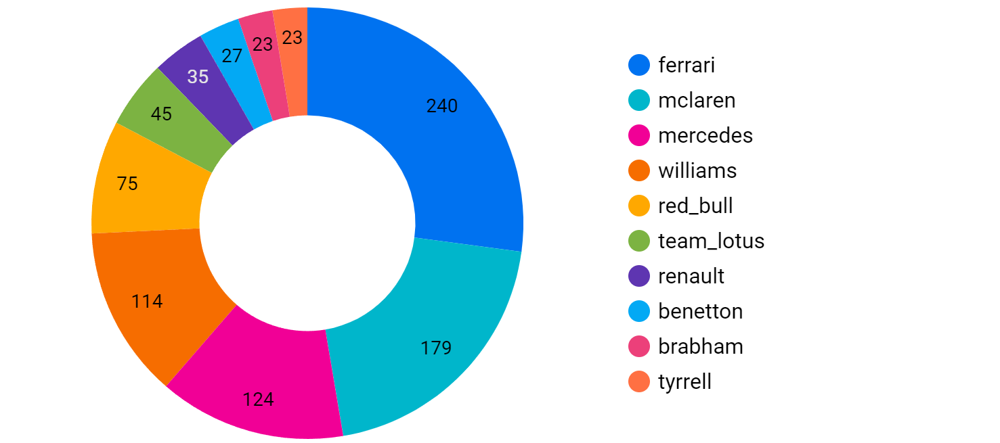

10 Construtoras com mais vitórias em Grand Prêmios
A McLaren totalizou 179 vitórias, ficando atrás apenas da Ferrari que ficou em primeiro lugar com 240 vitórias.
- Banco de dados: MySQL
- Gráfico: Google Data Studio
A primeira reunião foi realizada através do zoom, para definir as tarefas, separar o que cada membro da equipe deveria fazer e também definir as datas para cada entrega.
O modelo de destribuição de tarefas utilizado foi o kanban, com a ferramente trello, que possibilitou a comunicação da equipe, e organização das atividades.!
A o software utilizado para gerenciamento de dados foi o MySQL
O GitHub foi utilizado para hospedagem e controle de versão dos dados.
Para melhor visualização dos grárficos, acesse nosso repositório